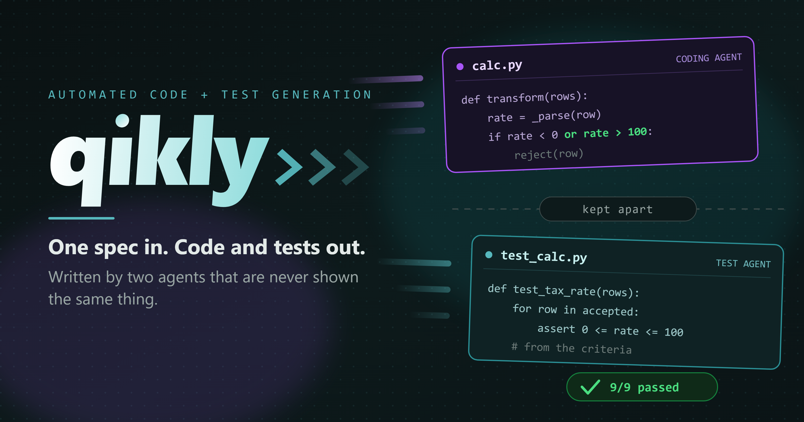
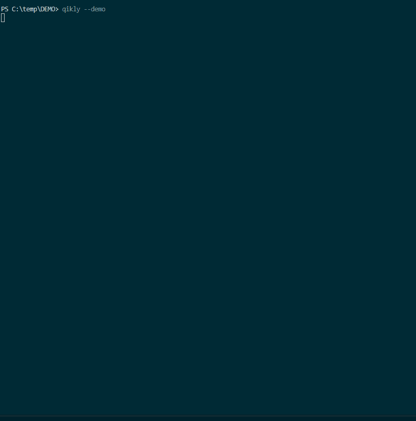

Your AI wrote the code and its tests. Every test passes.
In seconds, plant bugs in a copy of your Python code and see which ones get through. Then qikly writes stronger, independent tests from your spec, before it ever sees your code.
def test_discount():
assert apply_discount(100, 10) == 90
def test_label():
assert label("vip") == "gold"
✓ 2/2 passed
- if discount < 0 or discount > 100: + if discount < 0 or discount >= 100:✗ 10 of 13 faults missed
Your tests still say ✓ 2/2 passed, but qikly finds bugs they missed: 1 of 10
Works with Claude Code Codex Cursor Gemini CLI VS Code MCP GitHub Actions any terminal
Found in real code
1 / 1
Four of these came from a study of 50 Python libraries.
Start
qikly --score your_module.pyorqikly --score your_project_folder
Plants faults in a copy of your code, one at a time, and turns each one your tests did not notice into a question about behaviour nothing checks. Nothing of yours is changed. Where your tests can be
free, no key[pricing.py] 10 of 13 planted faults missed (77%), 3 caught. [pricing.py] 8 questions your tests leave open, in the same report.
For steps 2 and 3: set one API key,
such as GEMINI_API_KEY (Gemini's free tier needs no
card; how).
For every step, install or upgrade with pip install --upgrade qikly,
check your tests pass on their own with python -m pytest,
and run from your project's root folder. Each step takes one
module or a whole folder, and every step takes the same path.
No tests yet? Start at step 2. No code yet?
qikly --init makes a blank task file for your answers,
and step 3 writes the code.
qikly --scaffold your_module.pyorqikly --scaffold your_project_folder
A spec agent reads your README, docs and docstrings, never your
code, and writes an answer to each of step 1's questions as
acceptance criteria, in
inputs_private/config/tasks/.
The answers it had to judge are marked CHECK, and what
your docs do not decide is left as a TODO for you. Keep or change
any of them, and qikly --validate with the same path
checks the file, free.
A module and a folder, drafted and answered
#? What should apply_discount(100, 100) do?
#? Answer below drafted by qikly from your
#? README or docstrings: "a rate of 100 or
#? more is rejected with ValueError".
#? Keep it, or change it.
- "apply_discount(100, 100) raises ValueError"
drafted from your README, never from your code: yours to keep or change
qikly --tasks your_module.pyorqikly --tasks your_project_folder
A test agent writes tests from your answers
before any code is shown to it, and a separate coding agent,
which never sees them, repairs a copy of your code until they
pass. Your files are never edited. Then
qikly --take-tests with the same path copies the new tests
into your own tests folder, importing your code, and runs them on
it: a test that fails there is one to compare with your answer.
Run on your own code: 3 failed, 11 passed. These fail on your code and were written from your criteria: test_apply_discount_excessive_rate_raises - if rate < 0 or rate > 100: + if rate < 0 or rate >= 100:
- and + qikly's repair, made in a copy of your code: not your edit
Where your tests can be.
Anywhere in your project, such as a tests/ folder or beside
your code, in files named test_*.py that import your module.
Step 1 finds them; to name them instead, add
--score-tests test_folder/.
Other ways in
qikly --install-skillteaches Claude Code, Gemini CLI, Codex or Cursor to drive qiklyRead more
The core idea
This is step 3 above, qikly --tasks.

This was run by two independent AI agents:
or rate > 100 by itself,
so the 9 of 9 is code eventually passing the test suite after
applying fixes in an automated repair loop.How it works
One task file holds the requirements, the interface and the acceptance criteria. The test agent reads all three and writes the integration and system tests before any code exists. The coding agent gets the same file with the criteria cut out, and works from failing tests until the suite passes.
"Just use one model for the code and another for the tests."
That helps a little. It does not fix the underlying issue: both models
still read the same criteria, so the code is still built to the standard
it is about to be judged by. Changing who types it does not change
what they were shown. qikly removes the criteria from the coding agent's
prompt, qikly --explain shows the cut, and a test fails the
build if any call site lets a criterion through.
"Doesn't a failing test give the criteria away?" It shows the coding agent that one test, its source and its error, and the test often states the rule it checks. It cannot change a test already written: the integration and system suites exist before any code does, so what the agent learns from a failure can shape the code, never the bar.
Watch step 3 run on a bundled task
qikly --demo runs step 3 on a bundled task, with nothing
to fill in: tests written before any code, a coding agent that never sees
the criteria, and a repair. It writes nothing outside its own folder, and
costs well under a cent with a Gemini, OpenAI or Anthropic key.

qikly --demo run, unedited. The criteria
are withheld, the suites are generated, a test fails, a patch lands, and
it goes green. 38 seconds on gemini-3.5-flash-lite, not sped up.FAQ
Not for qikly --score: it runs on your machine and calls
no model. The steps that use a model, drafting the spec, writing the tests
and repairing the code, send what they need to the provider whose key
you set: Gemini,
OpenAI or Anthropic. Apart from that, the only network call is a check
for a newer release, which you can turn off. The
privacy page
has the details.
Not to start. qikly --score needs no key. Steps 2 and 3
need one key from Gemini, OpenAI or Anthropic.
qikly --score is free. With a key, drafting the spec costs
a fraction of a cent and a run on one file about a cent. A whole folder
can cost a few cents, depending on what is tested. qikly defaults to a
cheap model, Gemini 3.5 Flash-Lite, which I have tested extensively and
which does this work well.
No. --score plants its faults in a temporary copy, and
the code and tests a run writes go into outputs/. They
reach your source tree only if you copy them there, for example with
--take-tests.
It tests what a Python module does with its inputs: data transforms and ETL steps, calculations, validation rules, merges and business logic, with integration, system and unit tests in pytest. It is built for self-contained modules in small to mid-sized repositories.
It does not test user interfaces, performance, load, security or any other non-functional property, and it does not run end-to-end tests across services.
It fits most naturally where verification already has to be independent of the people who build the thing: automotive, medical devices, fintech and defence.
Yes, under the Apache License 2.0.
A star on GitHub helps the next developer find qikly. Tell me what it found, or where it got stuck, in a discussion.
The separation this tool enforces is ordinary practice in safety-critical engineering, where verification is required to be independent of implementation as part of a V&V (Verification & Validation) methodology for testing. This library's author worked in that setting on General Motors' autonomous vehicle program before building this toolset.